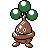

#112
Bonsly
Rock
Abilities: Sturdy, Rock Head, Rattled
Base stats BST 325
HP60
Attack85
Defense100
Speed10
Sp. Atk10
Sp. Def60
Evolution
Level-up learnset
LevelMoveType
Lv. 1CharmNormal
Lv. 1SubstituteNormal
Lv. 5ReversalFighting
Lv. 8Low KickFighting
Lv. 12LeerNormal
Lv. 15Rock ThrowRock
Lv. 19Faint AttackDark
Lv. 22AncientpowerRock
Lv. 26ProtectNormal
Lv. 29Rock SlideRock
Lv. 33CounterFighting
Lv. 36Sucker PunchDark
Lv. 40Double-EdgeNormal
Wild locations
Not found in the parsed wild encounter tables.